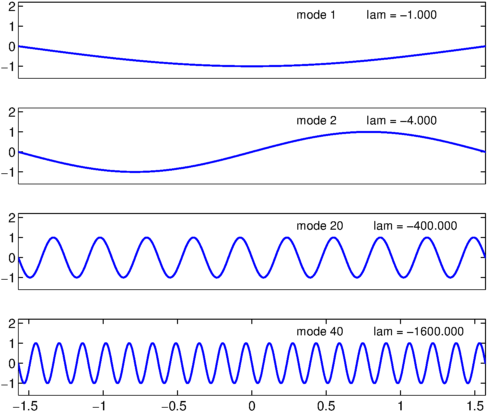
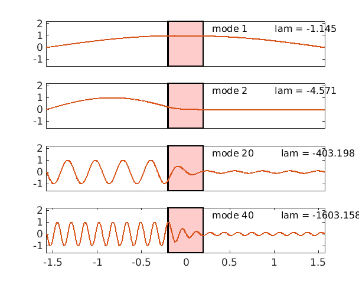

Here are eigenmodes $1$, $2$, $10$, $20$ of the wave equation on $[-\pi/2,\pi/2]$:
FS = 'fontsize'; fs = 12;
figure('position', [0 0 600 480])
L = chebop(-pi/2,pi/2);
L.op = @(u) diff(u,2);
L.bc = 'dirichlet';
nn = [1 2 20 40]; nmax = max(nn);
[V,D] = eigs(L,nmax);
d = diag(D); [d,ii] = sort(d,'descend'); V = V(:,ii');
for j = 1:4
n = nn(j);
v = V(:,n); % pick out nth eigenvector
v = v/norm(v,inf); % normalize to have amplitude 1
lam = d(n); % nth eigenvalue
subplot(4,1,j)
plot(v)
axis([-pi/2 pi/2 -1.6 2.2])
if j < 4, set(gca,'xtick',[]), end
text(.3,1.6,sprintf('mode %d lam = %6.3f',n,lam),FS,fs)
end

Here are the same, but for the wave equation with a decay band:
clf
a = 0.2;
x = chebfun('x',[-pi/2 pi/2]);
middle = (abs(x)<=a);
L.op = @(x,u) diff(u,2) + (2/a)*middle.*diff(u); % decay band
nn = [1 2 20 40]; nmax = max(nn);
[V,D] = eigs(L,nmax);
d = diag(D); [d,ii] = sort(d,'descend'); V = V(:,ii');
for j = 1:4
n = nn(j);
v = V(:,n); % pick out nth eigenvector
v = v/norm(v,inf); % normalize to have amplitude 1
lam = d(n); % nth eigenvalue
subplot(4,1,j)
hold off, fill(a*[-1 1 1 -1],[-1.6 -1.6 2.2 2.2],[1 .8 .8])
hold on, plot(v)
axis([-pi/2 pi/2 -1.6 2.2])
if j < 4, set(gca,'xtick',[]), end
text(.3,1.6,sprintf('mode %d lam = %6.3f',n,lam),FS,fs)
end
